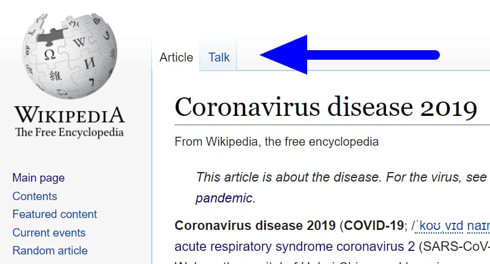

How do I communicate with other editors on Wikipedia?
To communicate with other editors on Wikipedia, use talk pages for articles and user talk pages for specific users. You can also participate in discussions on various pages and noticeboards. Be respectful and follow Wikipedia's guidelines. 
As shown in the above picture you will find talk pages or discussion pages.When you click talk page you can start communicating,share your thoughts,get suggestions from other users
Any other queries